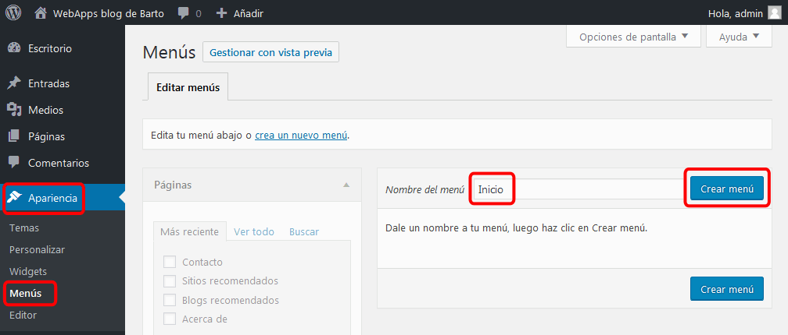
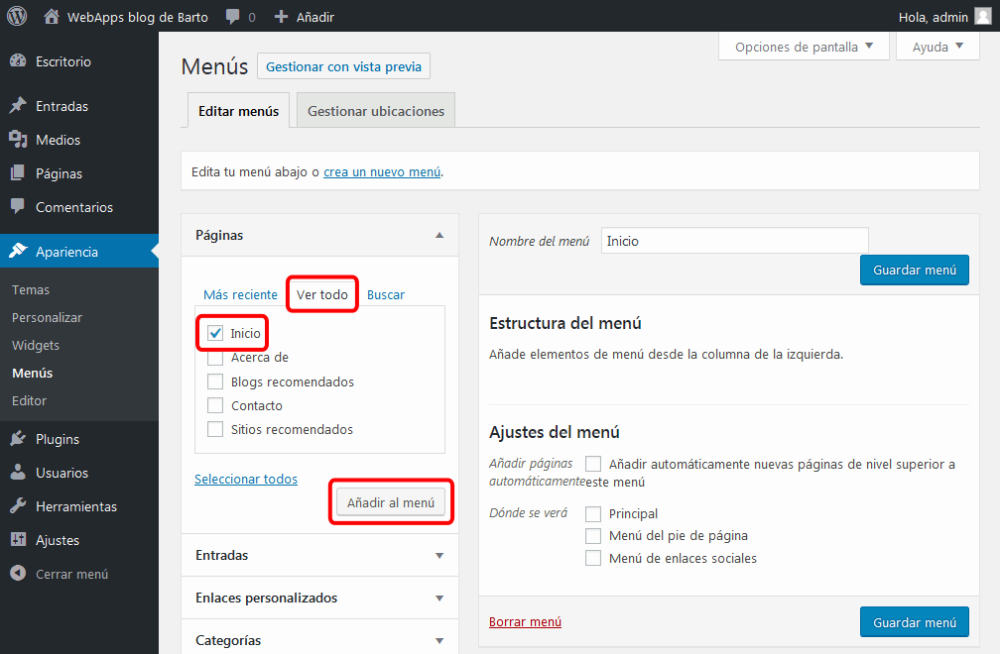
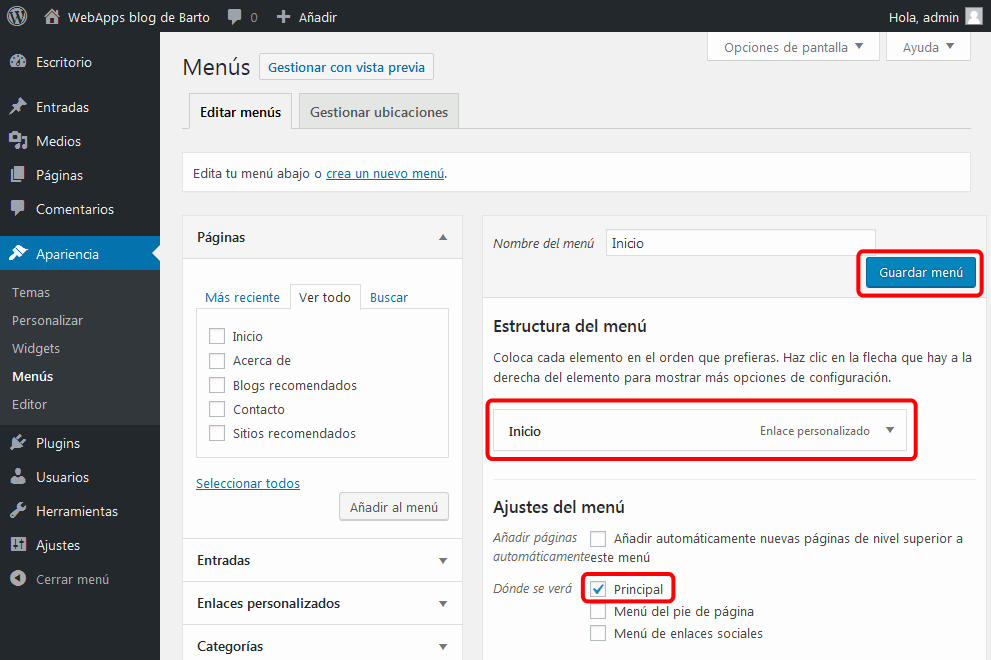
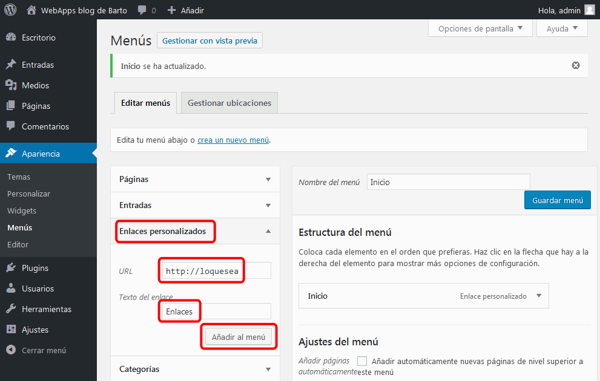
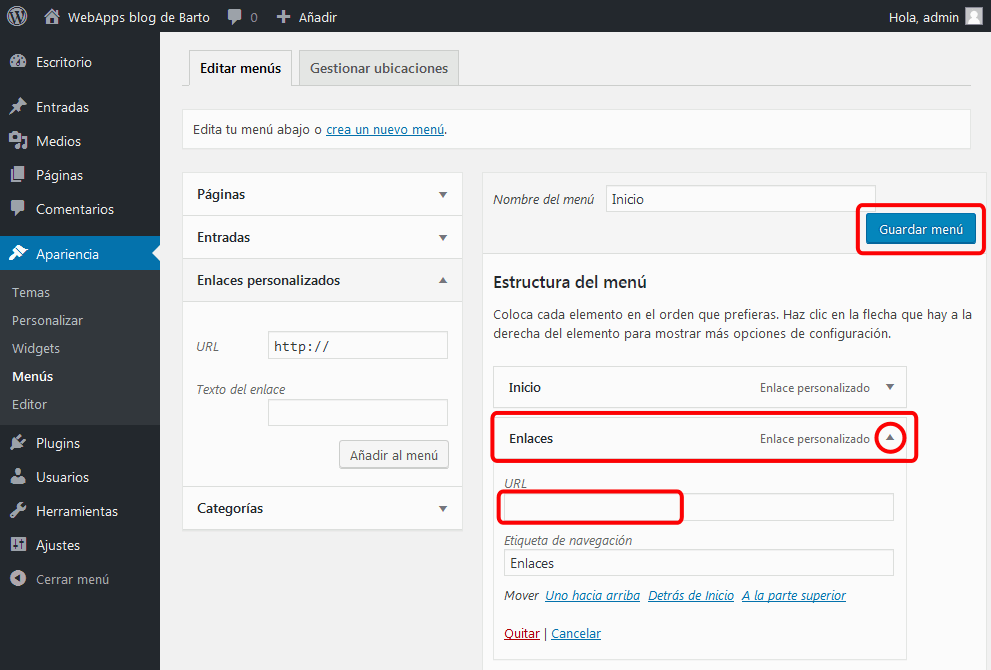
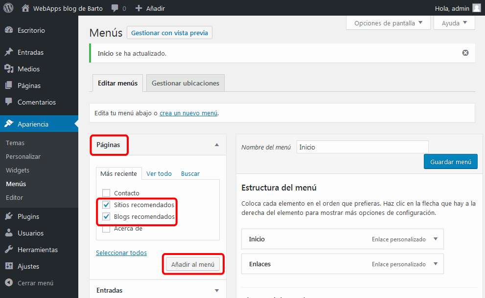
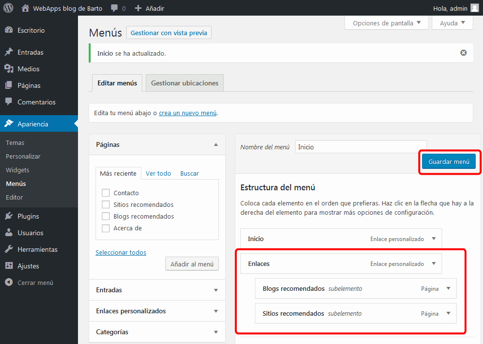

En esta lección se proponen soluciones detalladas de los ejercicios (2) de WordPress. Se recomienda intentar realizarlos primero sin recurrir a estas soluciones.
WordPress (2) 1 - Primeros pasos
Algunos cambios se pueden realizar en varios sitios.
Ajustes básicos
Escritorio > Ajustes > Generales
Escritorio > Entradas > Todas las entradas
Situando el cursor sobre la fila de una entrada, se muestran opciones para editar la entrada:
La opción Edición rápida permite cambiar varios elementos de una entrada: el título, la fecha, las etiquetas, etc.
La opción Editar permite cambiar cualquier elemento de la entrada.
Escritorio > Comentarios
Situando el cursor sobre la fila de un comentario, se muestran opciones para editar el comentario:
La opción Edición rápida permite cambiar varios elementos de un comentario: el contenido, los datos del autor del comentario, etc.
La opción Editar permite cambiar cualquier elemento del comentario.
Escritorio > Páginas > Todas las páginas
Situando el cursor sobre la fila de un comentario, se muestran opciones para editar la página:
La opción Edición rápida permite cambiar varios elementos de una página: el título, la fecha, el enlace permanente, etc.
La opción Editar permite cambiar cualquier elemento del comentario.
WordPress (2) 2 - Páginas
Las páginas se pueden crear mediante el menú Escritorio > Páginas > Añadir nueva.
Si se trata de un borrador al cual los visitantes no deben poder acceder todavía, haga clic en Sólo guardar. Para que la página pueda ser visible para los visitantes del blog, haga clic en Publicar. Pero tenga en cuenta que las nuevas páginas no se muestran automáticamente, sino que hace falta incluir un enlace a ellas en algún menú, entrada o página ya visible.
Wordpress (2) 3 - Menús
Para crear un nuevo menú con un enlace a la página principal:
abra la sección Escritorio > Apariencia > Menús
escriba el nombre del menú y haga clic en "Crear menú":

en el apartado Páginas, haga clic en la pestaña "Ver todo", marque la casilla correspondiente a Inicio y haga clic en "Añadir al menú":

en el apartado "Estructura del menú" se mostrará el enlace a Inicio creado. En el apartado "Ajustes del menú", marque la casilla correspondiente a Principal y haga clic en "Guardar menú":

Para añadir a un menú existente una opción que no enlace a ningún sitio:
en el apartado "Enlaces personalizados", escriba el texto y una URL cualquiera y haga clic en "Añadir al menú":

en el apartado "Estructura del menú" se creará un elemento. Despliegue el elemento y borre la URL y haga clic en "Guardar menú":

Para añadir a una opción de menú algunas opciones de submenú que enlacen a diferentes páginas:
en el apartado Páginas, marque las páginas que quiera enlazar y haga clic en "Añadir al menú":

en el apartado "Estructura del menú" se creará un elemento por cada página marcada. Arrastre los elementos ligeramente a la derecha del elemento que vaya a ser la primera opción de ese submenú y haga clic en "Guardar menú":

WordPress (2) 4 - Entradas
Las entradas se pueden crear en Escritorio > Entradas > Añadir nueva.
Una vez creadas las entradas, se pueden editar en Escritorio > Todas las entradas. Situando el cursor sobre la fila de una entrada, se muestran opciones para editar la entrada:
La opción Edición rápida permite cambiar varios elementos de una entrada: el título, la fecha, las etiquetas, etc.
La opción Editar permite cambiar el contenido y otros elementos de la entrada.
WordPress (2) 5 - Comentarios
Por escribir
WordPress (2) 6 - Medios
Por escribir
WordPress (2) 7 - Usuarios
Por escribir
La imagen de usuario se activa en Ajustes > Comentarios > Avatar por defecto.